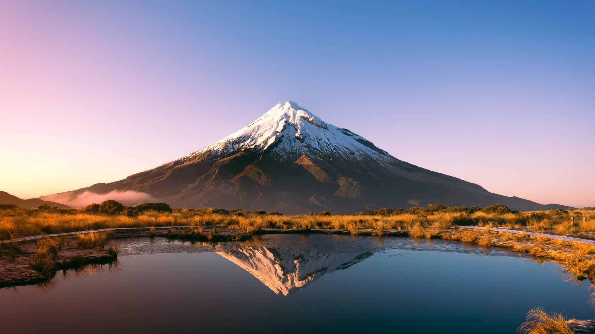
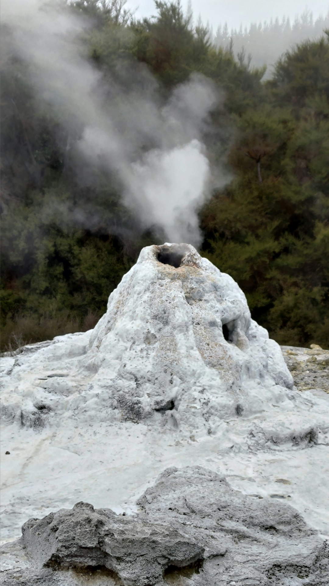
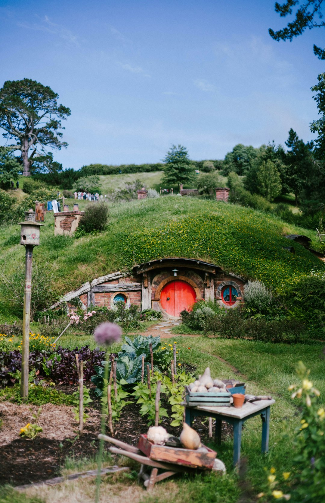
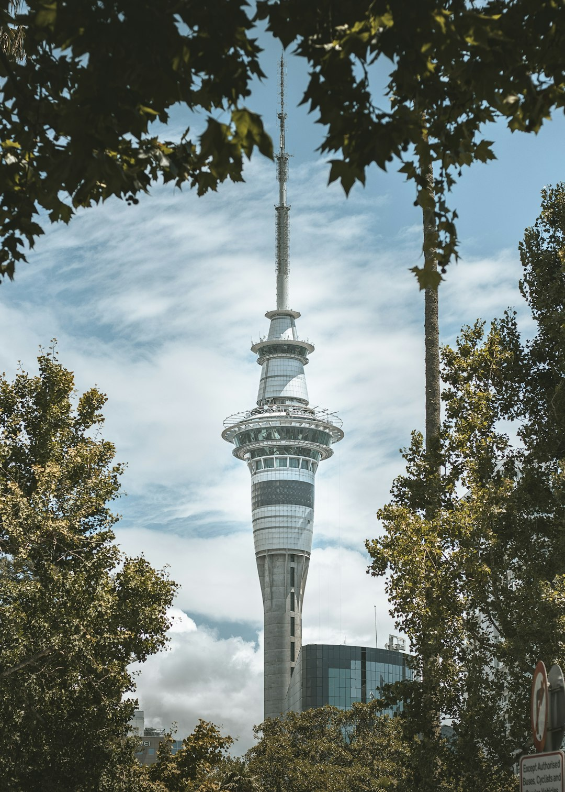
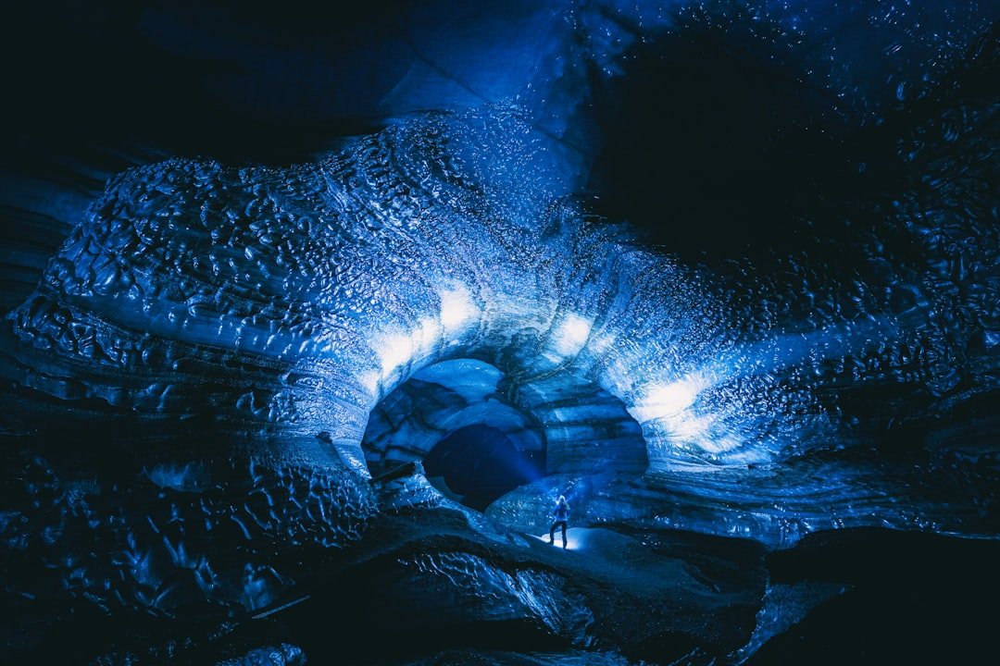
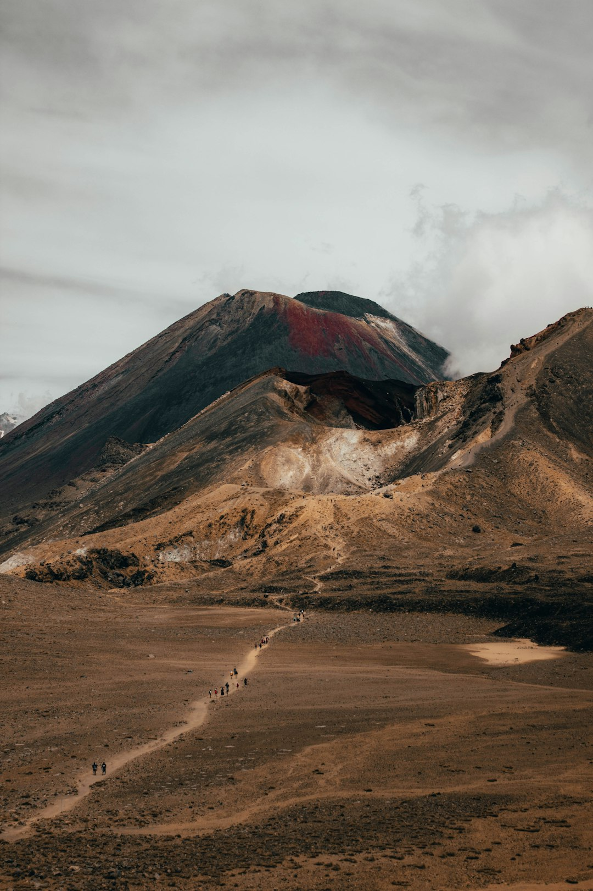
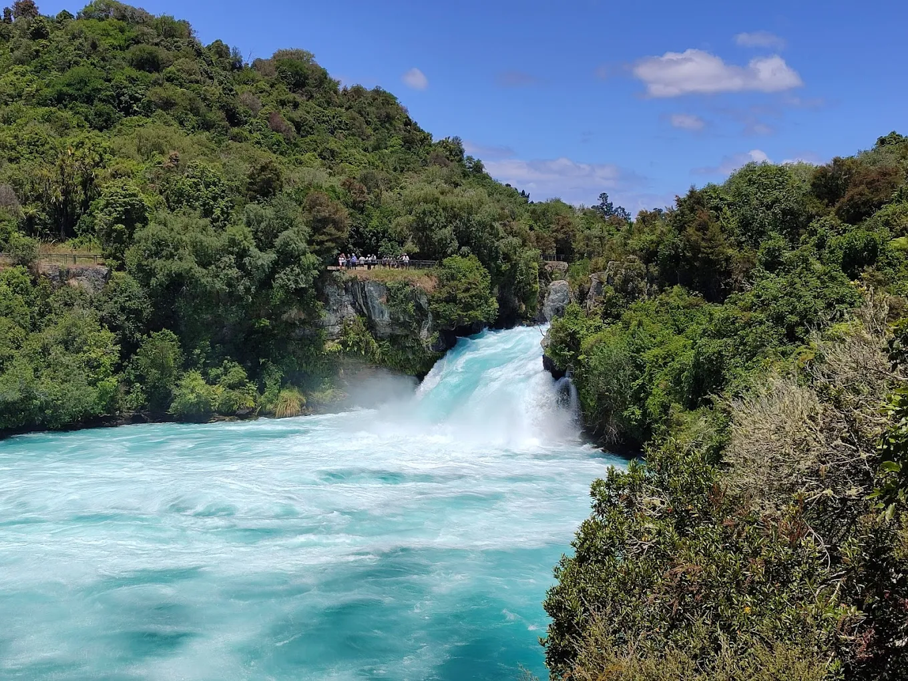

NZ Travel
Discover New Zealand
Discover New Zealand

Discover geothermal wonders, rich Māori culture, pristine beaches, and the vibrant energy of New Zealand's North Island
The North Island, known to Māori as Te Ika-a-Māui (the fish of Māui), is where New Zealand's geothermal activity, rich indigenous culture, and modern urban life converge.
From the bubbling mud pools and geysers of Rotorua to the cosmopolitan energy of Auckland, this island offers an incredible diversity of experiences.
Home to over 75% of New Zealand's population, the North Island balances natural wonders with vibrant cities,
offering visitors everything from world-class museums and restaurants to active volcanoes and ancient forests.
Welcome to North Island. Click on the map to view the detailed route

Rotorua is world-famous for its dramatic geothermal activity and its deep roots in Māori heritage. It is a place where nature feels "alive."
Geothermal Wonders: Visit Wai-O-Tapu Thermal Wonderland to see the neon-orange "Champagne Pool" or Te Puia to witness the Pohutu Geyser, which erupts up to 30 meters high.
Cultural Experience: Engage in a Hāngī feast (food cooked in an underground oven) and watch a powerful Haka performance.
Relaxation: Soak in the mineral-rich waters of the Polynesian Spa, consistently voted one of the best medical spas in the world.

Located on a lush sheep farm near Matamata, this is the permanent set used in The Lord of the Rings and The Hobbit trilogies.
The Experience: You can walk past 44 Hobbit Holes, including Bag End (Bilbo’s home), tucked into the rolling green hills.
The Green Dragon™ Inn: At the end of the tour, you can enjoy a complimentary, specially brewed beverage in a setting that looks exactly like the films.
Tip: Tours sell out weeks in advance, so booking early is essential.

Standing at 328 meters, this is the tallest free-standing structure in the Southern Hemisphere and the landmark of New Zealand's largest city.
The View: Take a glass-fronted elevator to the observation deck for a 360-degree view of Waitematā Harbour and the Auckland skyline.
For Thrill-seekers: You can try the SkyWalk (walking around a narrow platform outside the tower) or the SkyJump (a 192-meter base-jump wire).
Dining: Orbit 360° is a revolving restaurant that completes a full rotation every hour.

The Waitomo Caves offer a rare subterranean experience lit by thousands of tiny, bioluminescent glowworms (Arachnocampa luminosa), unique to New Zealand.
Silent Boat Ride: The tour culminates in a quiet boat ride through the "Glowworm Grotto," where the ceiling is covered in thousands of tiny blue lights.
Geology: The caves are filled with spectacular stalactites and stalagmites formed over millions of years.
Adventure Option: For those wanting more excitement, Black Water Rafting involves tubing and jumping down underground waterfalls in the dark.

Located in Tongariro National Park (New Zealand's first national park and a double World Heritage Site), the hiking trail is approximately 19.4 kilometers long.
Key Highlights:
Alien terrain: Travelling among volcanic craters, solidified lava flows and deserts, this area is the prototype of the "Apocalypse Mountain" in the movie.
Emerald Lakes: Three volcanic lakes with their stunning blue-green coloration, representing the visual highlight of the hiking trail.
Challenging: The entire journey takes 7 to 9 hours and the weather changes very rapidly.
Safety reminder: Be sure to bring professional hiking equipment, sufficient water, and check the weather forecast in advance.

Huka Falls is a powerful waterfall on the Waikato River, located near Taupō. It is one of New Zealand's most visited natural attractions.
The Power: Approximately 220,000 liters of water per second thunders through a narrow gorge, creating a spectacular display of nature's force.
Viewing Platforms: There are several platforms that offer different perspectives of the falls, including one that allows you to feel the mist on your face.
Activities: You can take a jet boat ride to experience the falls up close or hike along the trails that offer stunning views of the surrounding forest and river.
Rent a car for maximum flexibility, or use the reliable bus networks connecting major attractions. Auckland serves as the main hub.
Summer (December–February) offers warm weather, while shoulder seasons provide fewer crowds and mild temperatures.
The North Island is rich in Māori culture. Show respect at sacred sites and embrace opportunities to learn about traditions.
The Definitive Guide to New Zealand. Whether you’re seeking scenic wonders or cultural immersion, our expert resources provide everything necessary to design your ideal itinerary.

{kind=link}
{kind=link}
{kind=link}
{kind=link}
{kind=link}
{kind=link}
{kind=link}